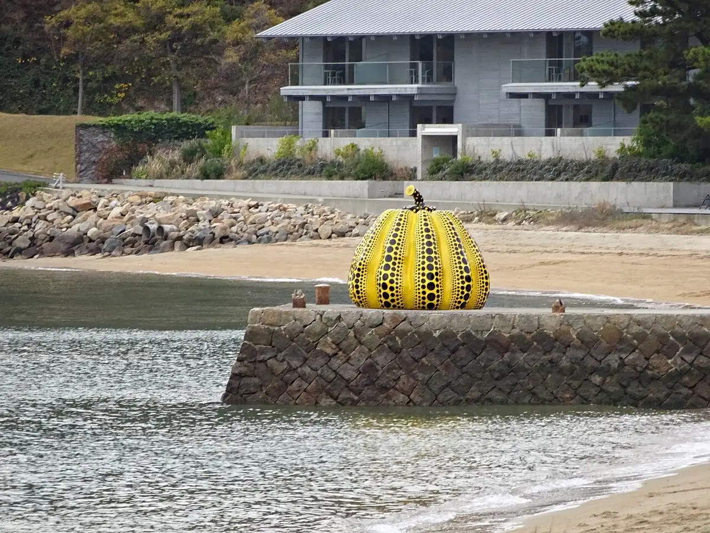
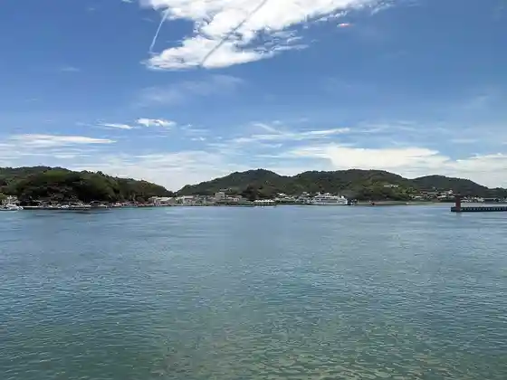
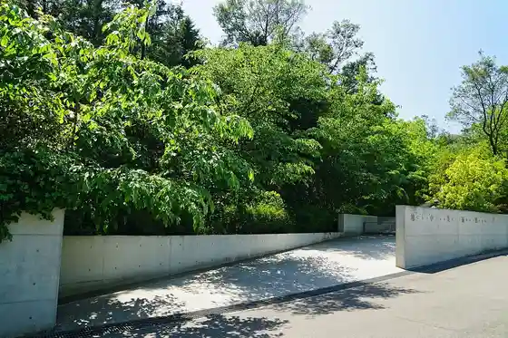
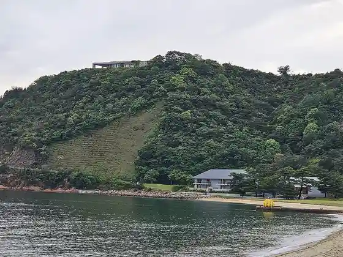
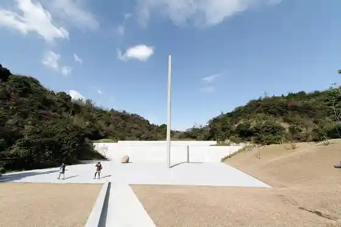

Naoshima
Naoshima · Kagawa
Naoshima
Highlighted on the Kagawa map.

Stay
Hanamizuki
Hokkori Minshuku Kiyoshi saya
Yado Sebun Beach ^
Yokombo 2 Petto to Toma Reru Yado ^
Kuintohausu Naoshima
Guest House Shima Yado Aisunao
Guest House PLENO ^
Benessehausu
Marora Obasan no Ie (Yado Sebun Beach Bekkan) ^
Minshuku Oyaji no Umi
Minshuku Nishi Village Ya
Minshuku Shiizun
Minshuku Take no Ie
Naoshima Umibe no Yado Nami Hei
Naoshima Furusato Umi no Ie Tsutsuji So
Naoshima Shukuhakujo Men Yado Ura ^
Episode1
GUESTHOUSE BambooVillage
GuestHouse Umi Tsu Ko
La Curacion (Ra Kurashion)
MY LODGE naoshima
SPARKY’s House
Yellow House
kokochi
Dining
Chichu Kafe
Kafe
Naoshima Pasuta REGALO
Maimai
EAT LOCAL Naoshima Shokudo
Kafesaron Chuoku
Sarrasin
Mikazukishoten
UMI NO STAND Tsutsuji So
&CAFE
Yomogi Tei
Okashito Kohii
Ko Koji
Umi no Mie Ruo Shokuji Tokoro Nagomi
Onsen
Naoshima Furusato Umi no Ie Tsutsuji So Kashikiri Furo
Experience
Naoshima Sento (I♥ Yu)
Sights
Kusama Yayoi (Kabocha)
Miyaura Minato

Chichu Art Museum

Benessehausu Museum

Sumomo U Kan Art Museum

Naoshima Pavirion
Ie Purojiekuto Go Shrine
Kon Dan Chi Beach
ANDO MUSEUM